Основных инструмента взломщика три:
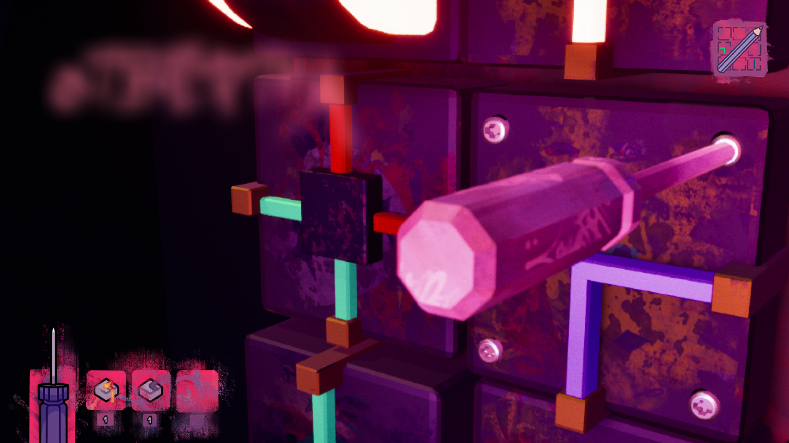
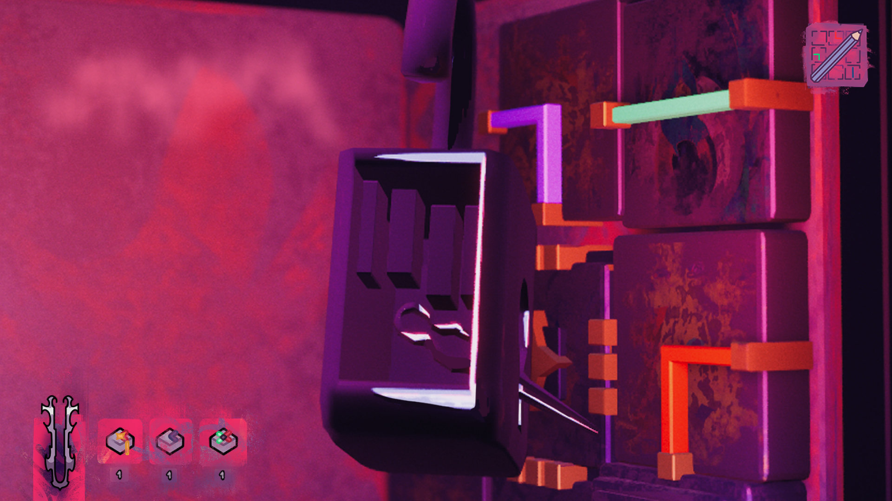
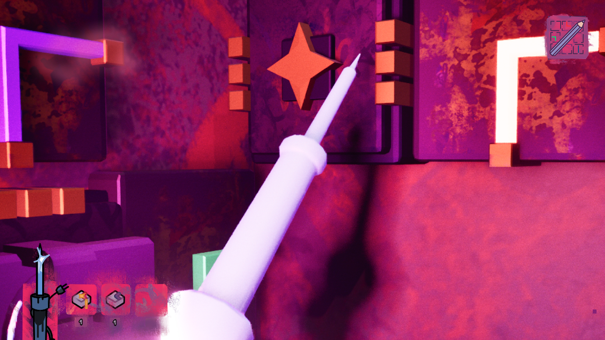
Инструменты нужны и для щитков с вентиляциями!
В них можно найти новые детали и чертежи автоматов, переносящиеся в журнале взлома.
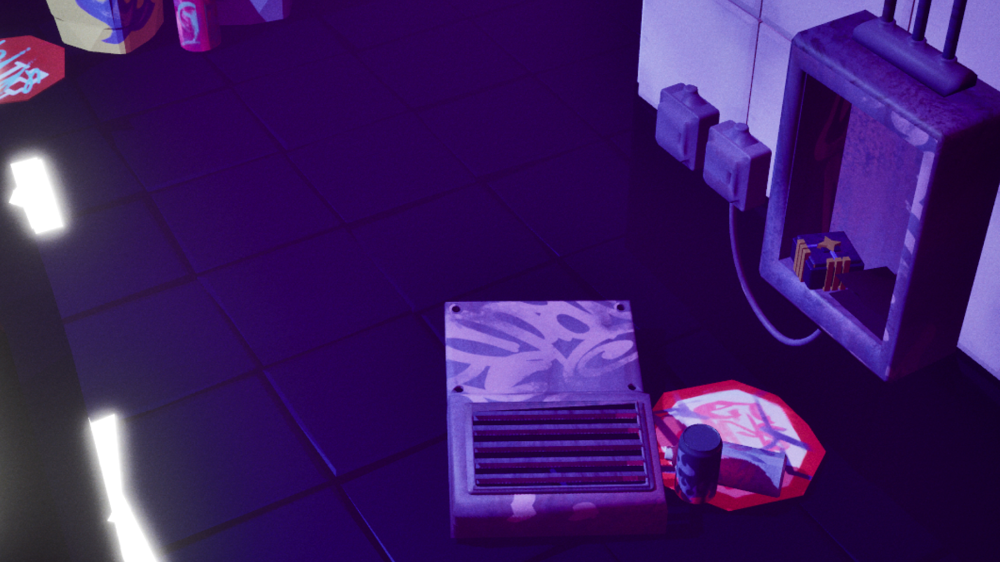
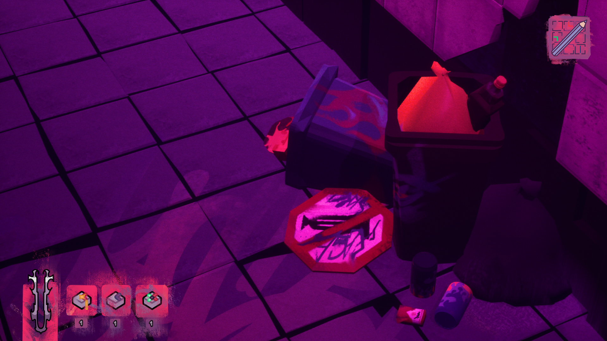
Спасти игрушки из всех автоматов? Ничего сложного! Нужно лишь...
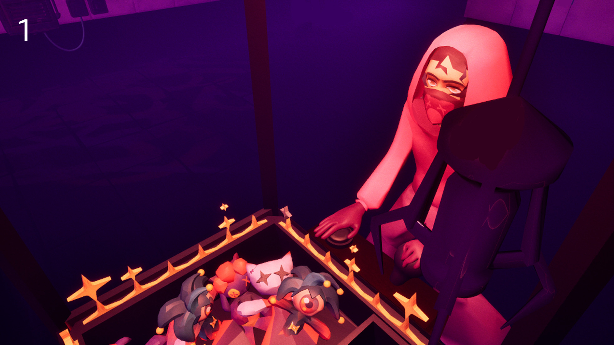
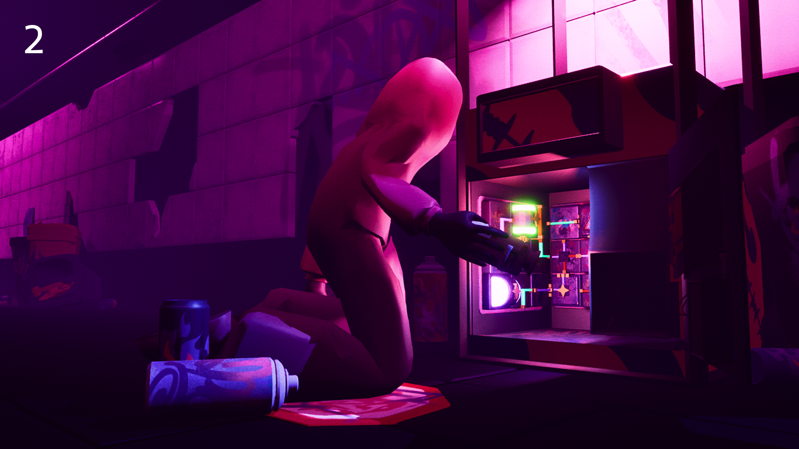
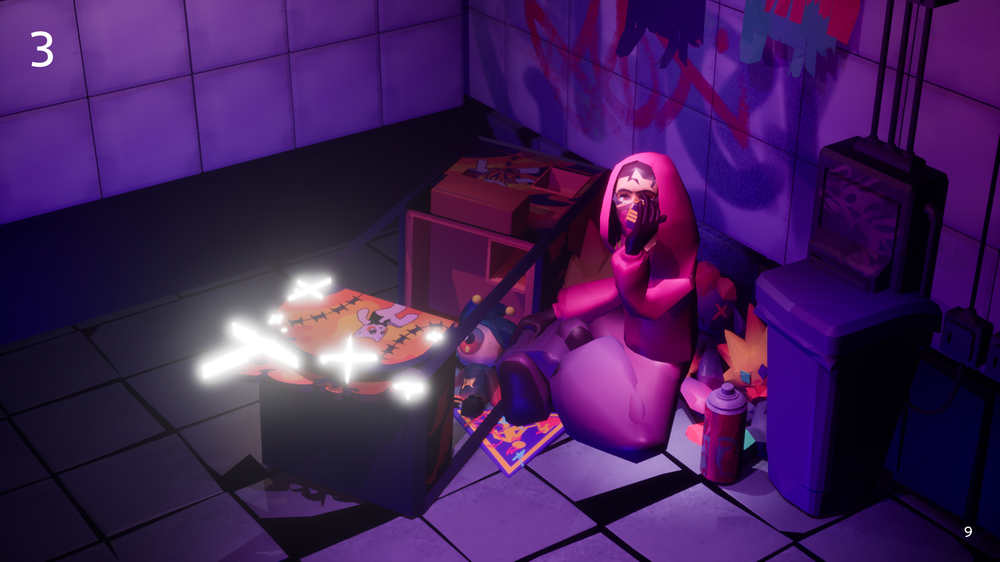
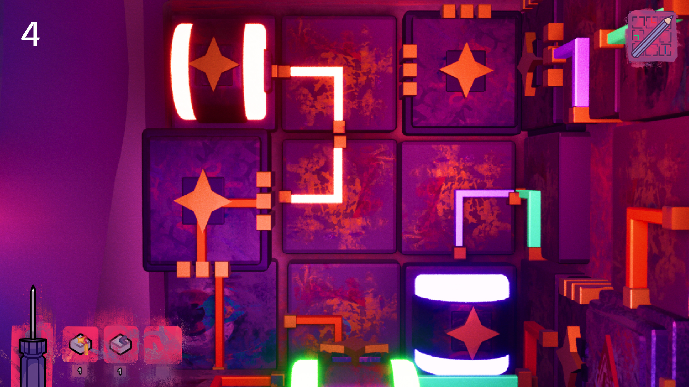
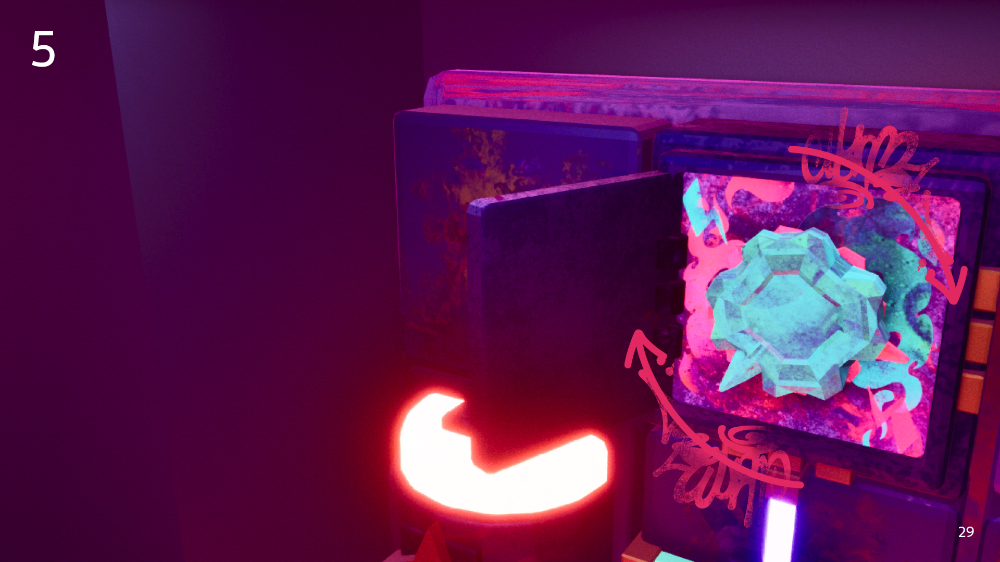
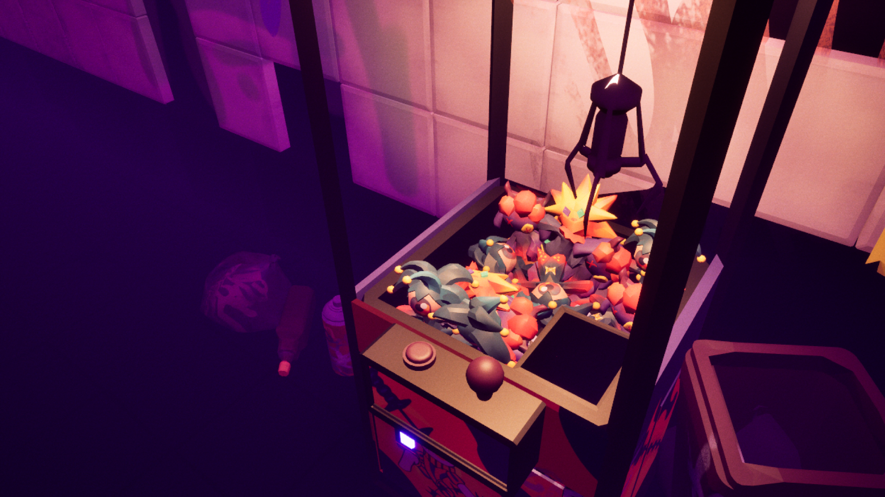